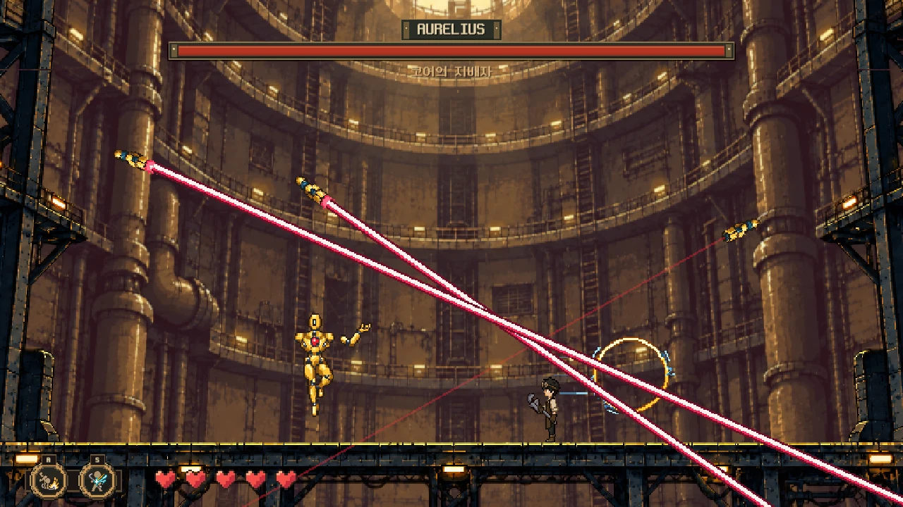

Unity 6 · C#
SteamHeart
쓰러진 할아버지의 기계 심장을 되살릴 코어를 찾아 도시의 하층에서 상층으로 올라가는 2D 사이드뷰 액션 어드벤처입니다.
- 담당
- 게임 프로그래밍 전체
UI 제작 · 레벨 구현·연출 적용 - 제작
- 4인 팀 · 기획 제외 약 3개월
최종 보스의 부위별 공격 패턴
부위 예약
최종 보스는 손 네 개와 링으로 여섯 가지 패턴을 씁니다. 손 네 개와 링을 각각 제어하고, 패턴마다 필요한 부위를 미리 예약했습니다.
예약된 부위는 새 공격을 시작하지 않습니다. 하던 공격이 끝나 필요한 부위가 모두 준비되면 패턴을 실행합니다.
아래 표에서 패턴 이름을 누르면 그 패턴의 영상이 재생됩니다.
| 패턴 | 사용 부위 | 동작 |
|---|---|---|
| 손마다 독립 | 각 손이 따로 조준하고 광선 발사 | |
| 아래쪽 손 하나 | 플레이어의 이동을 방해하는 구역 생성 | |
| 위쪽 손 하나 + 링 | 링에서 발동해 플레이어를 끌어당김 | |
| 위쪽 손 하나 + 링 | 플레이어의 위치를 따라가는 광선 발사 | |
| 네 손 + 링 | 네 손으로 링을 충전해 벽에 반사되는 광선 발사 | |
| 네 손 + 링 | 2페이즈에서 발동하며 보호막 안에서 회피 가능 |
자세히: 공격이 중단될 때의 처리
공격이 끝났을 때와 도중에 끊겼을 때는 같은 종료 처리를 탑니다. 여기서 경고 표시와 공격 판정을 지우고 예약을 풀어서, 그 부위를 다음 패턴이 다시 쓸 수 있습니다.
끊기는 도중에 정리가 한 번만 실행되는지, 다른 패턴이 쓰고 있는 부위에 영향을 주지 않는지는 회귀 테스트로 확인합니다.


보스 1의 공격 패턴과 잔해 연계
보스 1 ‘폐기된 파괴자’는 양손으로 네 가지 패턴을 씁니다. 과부하가 끝나면 본체가 아래로 내려오고, 이때가 공격 기회입니다.
잔해 연계
양손 내려찍기로 만든 잔해는 착지하면 장애물로 남습니다. 과부하는 바닥에 잔해가 있을 때 나오는 패턴으로, 손으로 그 잔해를 쳐서 날립니다.
잔해가 착지하면 낙하 피해 판정을 끄고, 과부하로 발사하면 잔해가 이동한 구간을 검사해 충돌을 처리했습니다. 잔해가 모두 소진되면 내려찍기를 다시 예약해 공급합니다.
| 패턴 | 동작 |
|---|---|
| 손을 프로펠러로 바꿔 플레이어를 끌어당김 | |
| 경고가 표시된 자리를 내려찍고 잔해를 남김 | |
| 바닥을 따라 양손이 가운데로 모이며 압착 | |
| 바닥의 잔해를 손으로 쳐서 날림 |
자세히: 만들면서 고친 문제
내려찍기만 반복하던 문제
5분 시연을 준비하면서 구간별 시간을 기록하며 직접 플레이했습니다. 그 과정에서 내려찍기가 반복해서 선택되어 다른 공격이 나오지 않는 상황을 발견했습니다. 아직 나오지 않은 공격을 먼저 고르고, 가장 위협적인 패턴인 과부하는 첫 순환의 마지막에 나오도록 조건을 정했습니다. 수정 후 패턴 선택 관련 테스트 8개가 통과했습니다.
지나갈 수 없는 잔해 틈
잔해 사이에 틈이 있어 보이는데 캐릭터가 지나가지 못하는 문제를 발견했습니다. 잔해를 서로 붙이거나, 캐릭터가 통과할 만큼 간격을 확보한다는 규칙을 제안했습니다.
사망 후에도 이어지는 성장
한 번의 도전에서만 쓰는 상태와 영구 진행도를 분리했습니다. 플레이어는 사망하면 처리장 입구에서 최대 체력으로 다시 시작합니다.
| 항목 | 사망 전 | 재도전 후 | 결과 |
|---|---|---|---|
| 보유 고철 | 50 | 50 | 유지 |
| 공격력 보너스 | +1 | +1 | 유지 |
| 무기 | 강화 무기 | 처음 무기 | 초기화 |
재도전 테스트 영상 보기
그 외 구현
- 플레이어 전투
- 기본 공격 2타, 공중 공격, 강타, 카운터, 대시. 지상 2타 콤보의 입력 예약과 타격당 중복 피해 방지
- 무기 강화
- 보스 1을 쓰러뜨리면 기본 공격 피해량이 8 · 12에서 12 · 16으로 증가
- 제작대
- 고철 5로 재료를 사고, 재료 3개로 공격력·최대 체력·피격 무적 시간을 각각 +10까지 강화
- 적·함정
- 일반 적 3종, 함정 2종
- 레벨·연출
- 포털 이동과 컷신을 연결한 씬 전환
- 기타
- 일시정지
크레딧
팀 석복동(4인) · 씬 8개 · 보스 2종 · 일반 적 3종 · 함정 2종 · 컷신 6편
- 최준이
- 프로그래밍, 애니메이션·연출 적용, 맵 구성·레벨 구현, UI 제작·구현
- 전진범
- 총괄, 기획, 배경·레벨 그래픽, 비주얼 디자인, 사운드 디렉팅
- 임경섭
- 기획, 사운드 디자인
- 최지환
- 스토리보드, 편집